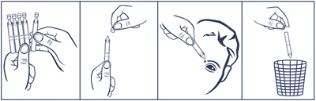
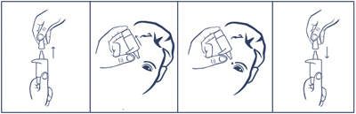
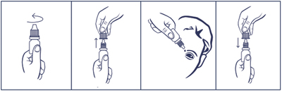

|
 |
| ВИКСИПИН® (VIKSIPIN) methylethylpiridinol капли глазные | ||||||
|
Клинико-фармакологическая группа: Препарат с ангиопротекторным и улучшающим микроциркуляцию действием для применения в офтальмологии Номер и дата регистрации: ЛП-003864 от 28.09.16 Код ATX: S01XA |
Владелец регистрационного удостоверения: зарегистрировано и произведено Представительство: | |||||
Форма выпуска, состав и упаковка Капли глазные в виде прозрачной или почти прозрачной, бесцветной или слегка окрашенной жидкости.
Вспомогательные вещества: гидроксипропилбетадекс - 20 мг, калия дигидрофосфат - 10.8 мг, натрия бензоат - 2 мг, натрия гиалуронат - 1.8 мг, натрия гидрофосфата дигидрат - 0.36 мг, 2М раствор фосфорной кислоты - до рН 4.0-5.0, вода д/и - до 1 мл. 5 мл - флаконы стеклянные (1) с насадками-упорами для пальцев - пачки картонные. | ||||||
| ||||||
Описание препарата основано на официально утвержденной инструкции по применению и утверждено компанией-производителем для издания 2022 г. | ||||||
Фармакологическое действие |
Фармакокинетика |
Показания |
Режим дозирования |
Побочное действие |
Противопоказания |
Беременность и лактация |
Особые указания |
Передозировка |
Лекарственное взаимодействие |
Условия хранения и сроки годности |
Условия реализации
Фармакологическое действие
Антиоксидант, обладающий ангиопротекторной, антиагрегантной и антигипоксической активностью. Уменьшает проницаемость капилляров и укрепляет сосудистую стенку. Уменьшает вязкость крови и агрегацию тромбоцитов. Ингибитор свободно-радикальных процессов, обладает мембраностабилизирующим действием. Обладает ретинопротекторными свойствами, защищает сетчатку и другие ткани глаза от повреждающего действия света высокой интенсивности. Способствует рассасыванию внутриглазных кровоизлияний, снижает свертываемость крови, улучшает микроциркуляцию глаза. Стимулирует репаративные процессы в роговице (в т.ч. в раннем послеоперационном и постраневом периоде). Фармакокинетика
Всасывание и распределение Препарат быстро проникает в ткани глаза, где происходит его депонирование и метаболизм. В тканях глаза концентрация выше, чем в крови. Связывание с белками плазмы крови в среднем составляет 42%. Метаболизм и выведение Обнаружено 5 метаболитов, представленных дезалкилированными и конъюгированными продуктами его превращения. Метаболизируется в печени. Метаболиты выводятся почками. Показания
Режим дозирования
Препарат закапывают в конъюнктивальную полость по 1-2 капли 2-3 раза/сут. Продолжительность курса лечения зависит от течения заболевания (обычно составляет 3-30 дней) и определяется врачом. При наличии показаний и хорошей переносимости препарата курс лечения может быть продолжен до 6 месяцев или повторяться 2-3 раза в год. Порядок работы с тюбик-капельницей  1. Открыть пакет, отделить одну тюбик-капельницу, остальные поместить обратно в пакет. 2. Вскрыть тюбик-капельницу (убедившись, что раствор находится в нижней части тюбик-капельницы, вращающими движениями повернуть и отделить клапан). 3. Запрокинуть голову назад, указательным пальцем одной руки оттянуть нижнее веко вниз, удерживая тюбик-капельницу другой рукой вертикально над глазом наконечником вниз. 4. Закапать необходимое количество препарата в конъюнктивальный мешок глаза. 5. Закрыть тюбик-капельницу клапаном. Вскрытую тюбик-капельницу можно хранить не более 24 ч, затем тюбик-капельницу следует выбросить. Порядок работы с флаконом, укомплектованным насадкой-упором для пальцев  1. Потянув за защитный колпачок вверх, открыть флакон. 2. Осторожно, не касаясь пальцами наконечника флакона, перевернуть флакон и, расположив большой палец одной руки на специальной насадке-упоре, сделать несколько нажатий до появления первой капли. 3. Запрокинуть голову назад, расположить наконечник флакона над глазом и указательным пальцем другой руки оттянуть нижнее веко вниз. 4. Держа большой палец на насадке-упоре, нажать на нее и закапать необходимое количество препарата в конъюнктивальный мешок глаза. Необходимо избегать контактов наконечника открытого флакона с поверхностью глаза и руками. 5. После использования надеть колпачок на флакон. После вскрытия флакона препарат можно использовать в течение 1 месяца. По истечении этого срока препарат следует выбросить. При видимых повреждениях флакона применять препарат не следует. Порядок работы с флаконом из полиэтилентерефталата с капельницей пластиковой  1. Вращающими движениями против часовой стрелки открыть флакон и снять колпачок. 2. Осторожно, не касаясь пальцами наконечника флакона, перевернуть флакон, зафиксировать между большим и указательным пальцами одной руки. 3. Запрокинуть голову назад, расположить наконечник флакона над глазом и указательным пальцем другой руки оттянуть нижнее веко вниз. Слегка надавить на флакон и закапать необходимое количество препарата в конъюнктивальный мешок глаза. Необходимо избегать контактов наконечника открытого флакона с поверхностью глаза и руками. 4. После использования надеть колпачок на флакон и закрыть вращающими движениями по часовой стрелке. После вскрытия флакона препарат можно использовать в течение 1 месяца. По истечении этого срока препарат следует выбросить. При видимых повреждениях флакона применять препарат не следует. Побочное действие
Возможно: ощущение жжения, зуд, кратковременная гиперемия конъюнктивы, местные аллергические реакции. Если любые из указанных выше побочных эффектов усугубляются или пациент заметил любые другие побочные эффекты, он должен сообщить об этом врачу. Противопоказания
Применение при беременности и кормлении грудью
Применение препарата при беременности и в период грудного вскармливания противопоказано. Особые указания
При необходимости одновременного применения других глазных капель, препарат закапывают последним, после полного всасывания предыдущего лекарственного средства (не ранее, чем через 15 мин). Влияние на способность к управлению транспортными средствами и механизмами Нет данных. |
||||||
Вернуться наверх |
||||||
Copyright © Справочник Видаль «Лекарственные препараты в России», Москва, Россия